Design Portfolio for Fiasco Theater
Design Portfolio for Fiasco Theater
Poster Design
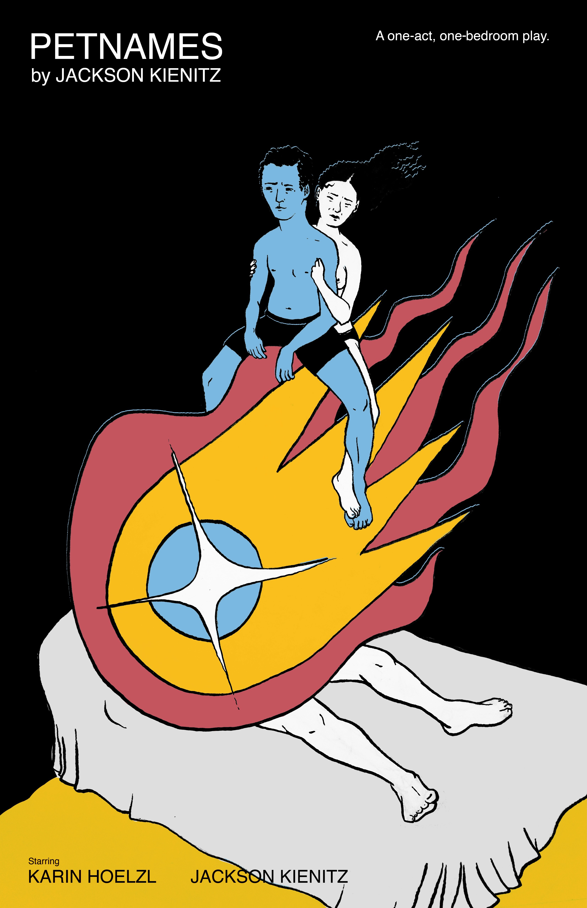
Poster for my one-act play, "Petnames."
Hand-drawn illustration with digital color.
Hand-drawn illustration with digital color.
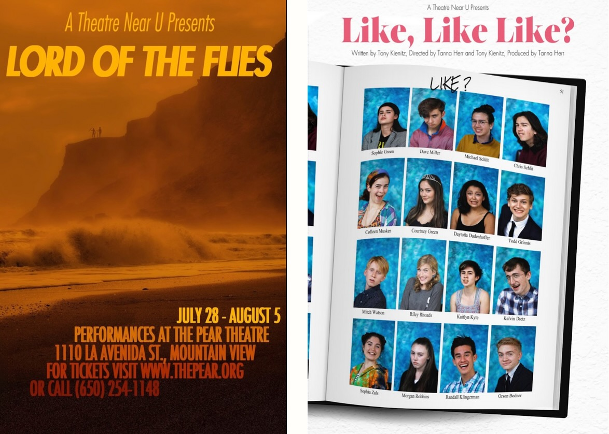
Additional posters for A Theatre Near U shows.
Photo manipulation.
Photo manipulation.
A selection of my poster designs for various stage productions.
Responsible for all aspects of design, including layout, illustration, and typography.
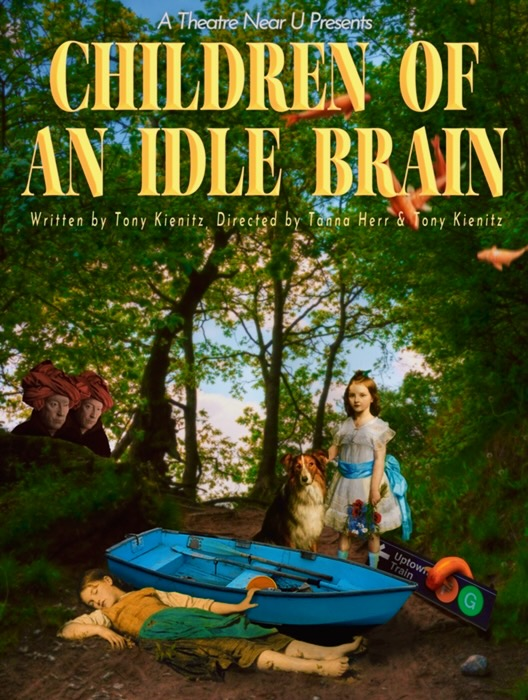
Poster for A Theatre Near U's Children of an Idle Brain.
Photo manipulation and digital collage.
Photo manipulation and digital collage.
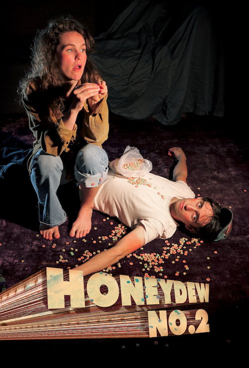
Poster for my play "HONEYDEW NO.2.
Staged photo with digital typography.
Staged photo with digital typography.
Web Design & Branding
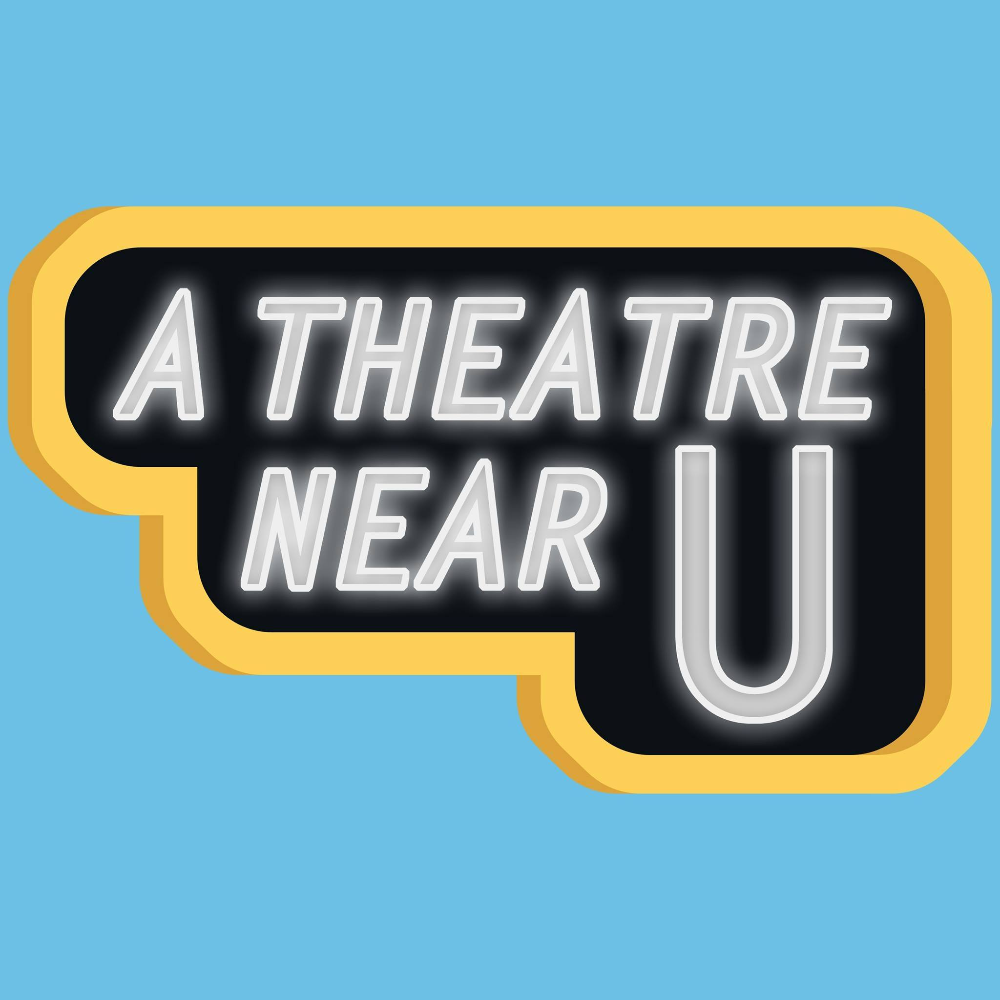
A Theatre Near U logo. Digital illustration.
Establishes a marquee motif, with bright and playful colors.
Establishes a marquee motif, with bright and playful colors.

Webpages from A Theatre Near U's website.
Responsible for all design, layout, and coding.
Responsible for all design, layout, and coding.

Webpages from my personal acting and writing portfolio.
Custom-coded in HTML & CSS.
Custom-coded in HTML & CSS.
T-Shirt Design
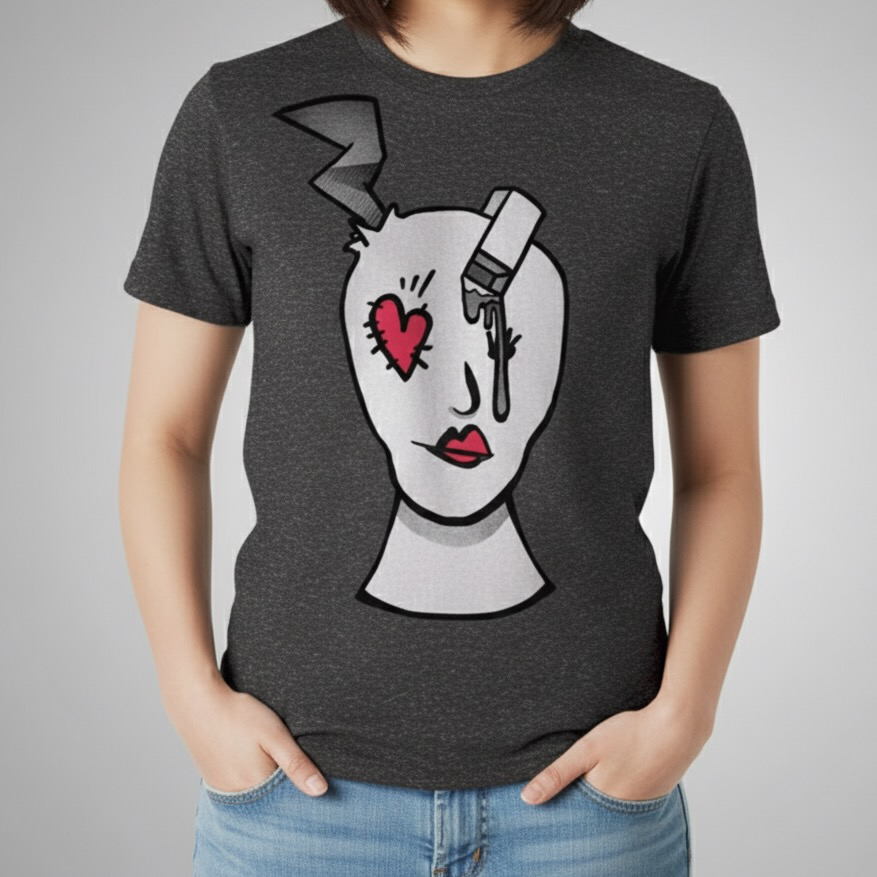
Mockup design for 'Twas Brillig shirt.
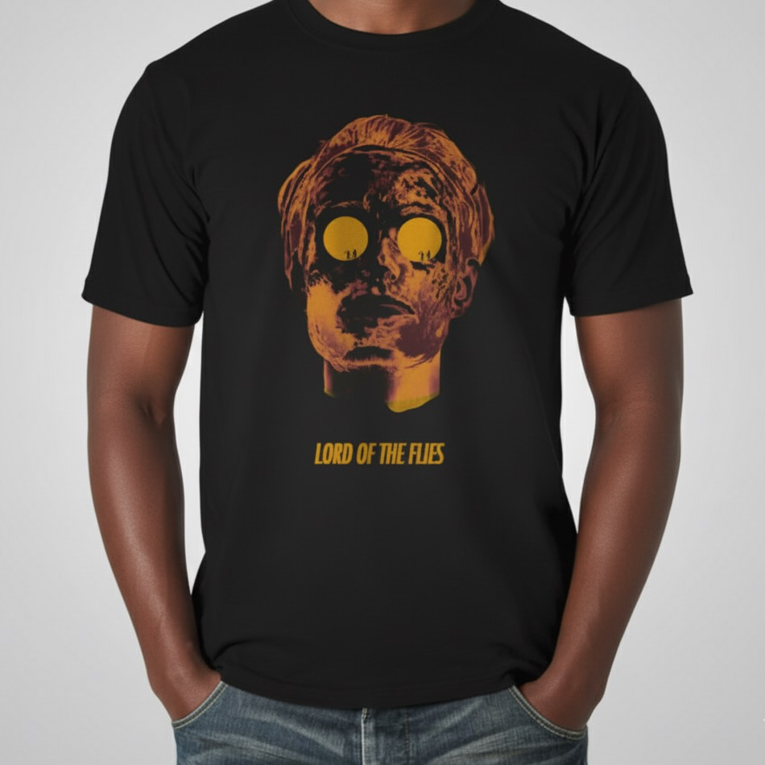
Mockup design for Lord of the Flies shirt.
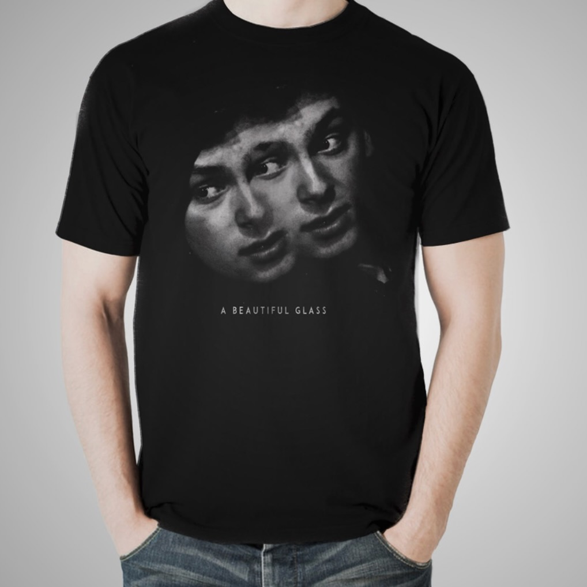
Mockup design for A Beatiful Glass shirt.
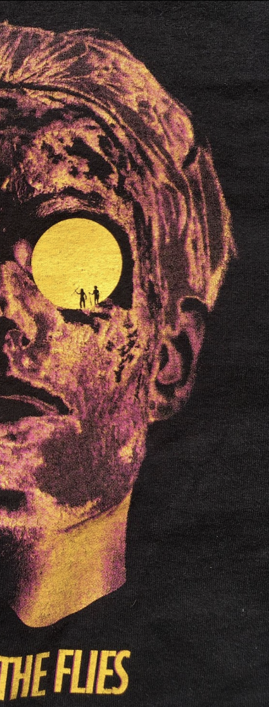
Detail shot of printed Lord of the Flies shirt
Design Choice: A "floating head" motif is used to establish consistency across A Theatre Near U t-shirts, while also allowing individualized style choices to match each show's themes.
Video Editing

Footage from my short film "Jenny Jump Rd."

Additional footage from my short film "Jenny Jump Rd."
Note for the children: littering is bad!
Note for the children: littering is bad!
A dance video.
Responsible for direction, cinematography, and editing.
Responsible for direction, cinematography, and editing.
A selection of my work for video and film.
Responsible for direction, cinematography, and editing.
Sample Designs for Fiasco
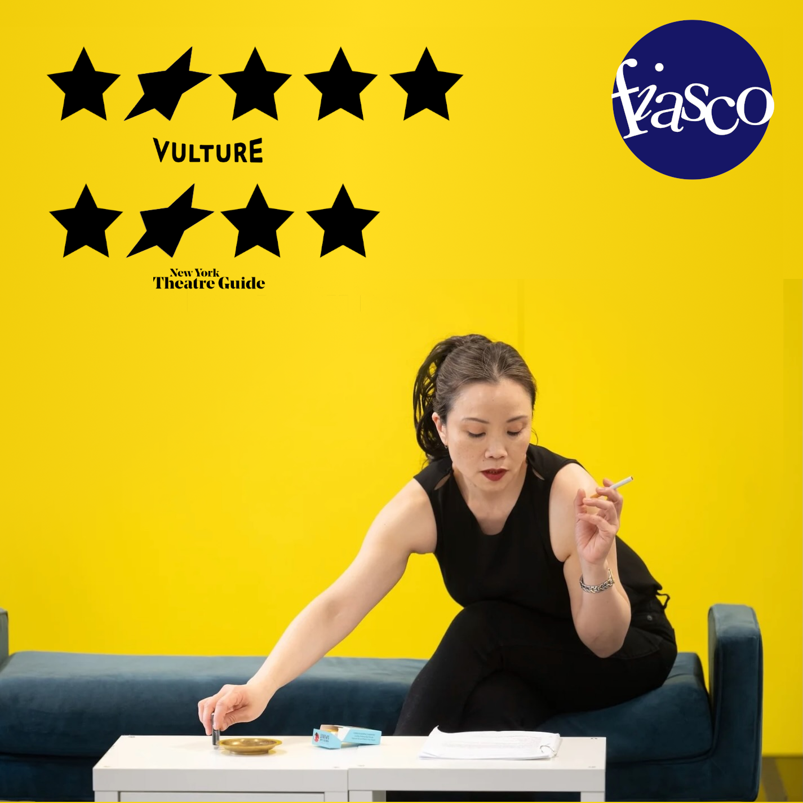
Sample social media post for Fiasco's The Stand-In
Photo by Toby Tenenbaum.
Photo by Toby Tenenbaum.
Design Choice: Italicized second star in the five-star review parallels Fiasco's slanted "i", matching industry norms while adding a personal flare.
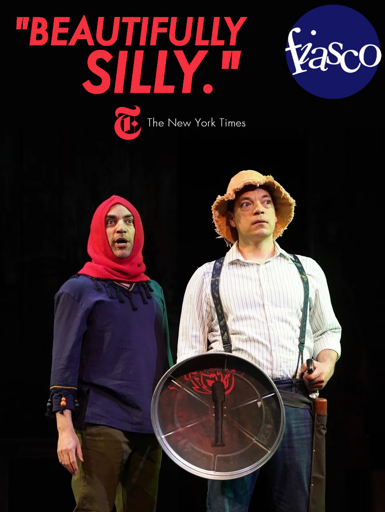
Sample post for Fiasco's Knight of the Burning Pestle
Photo by Carol Rosegg.
Photo by Carol Rosegg.